Ce projet est en collaboration avec Lisa Dovergne et Anne-Claire Michi.
Un abécédaire est un livre destiné aux enfants pour leur apprendre l'alphabet. Ici au lieu de l'apprendre avec des mots du quotidien ils l'apprennents avec des mots péjoratifs qui définissent un vilain d'un film Disney
 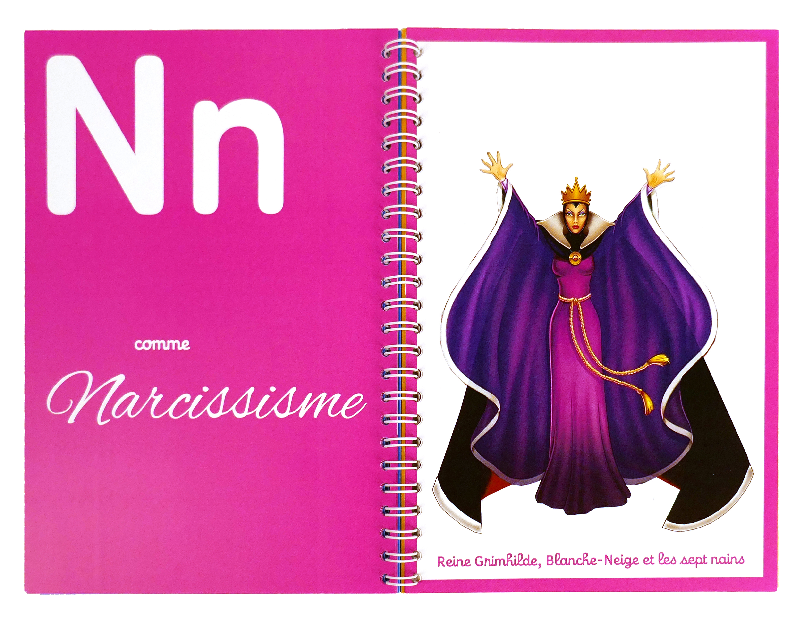
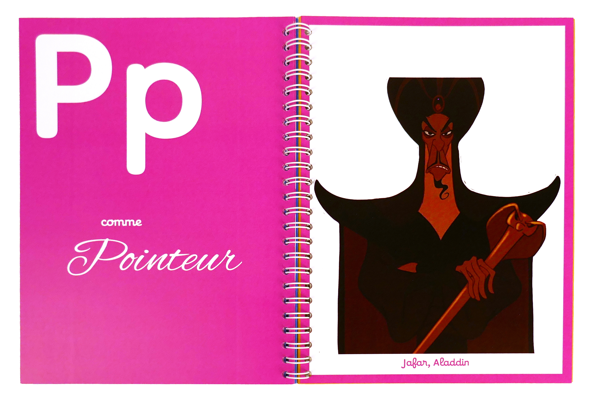
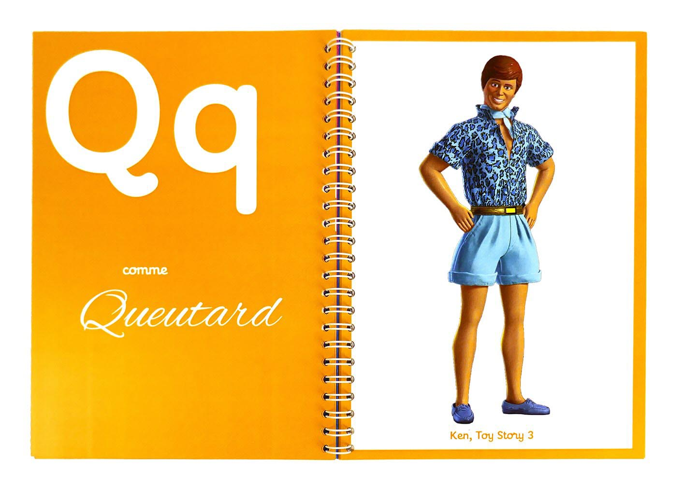
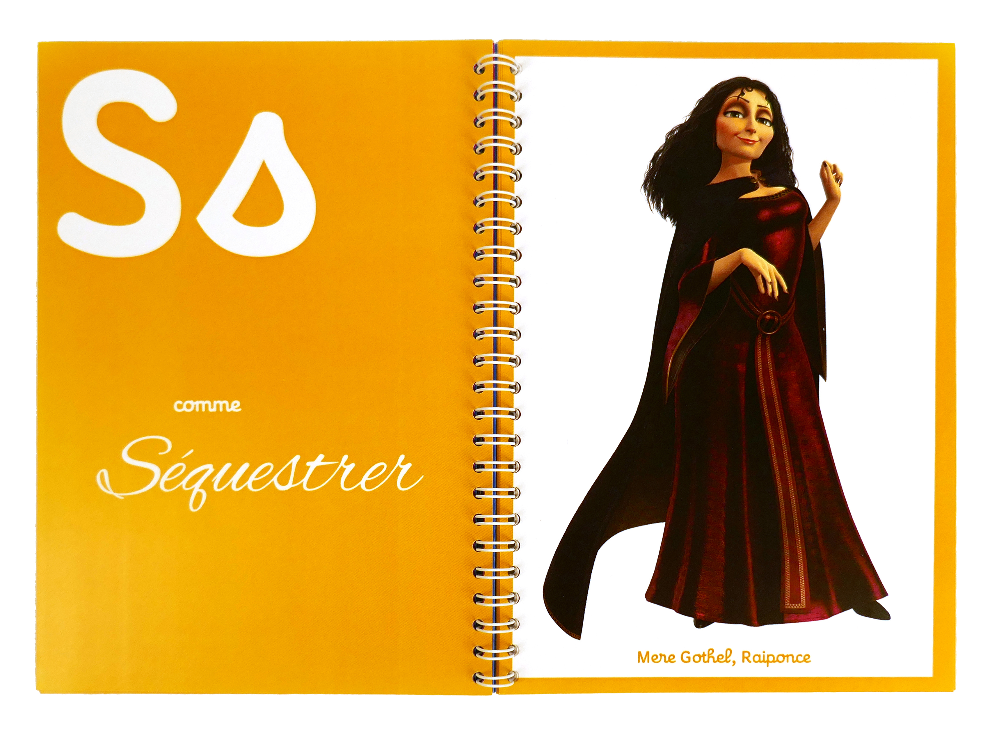
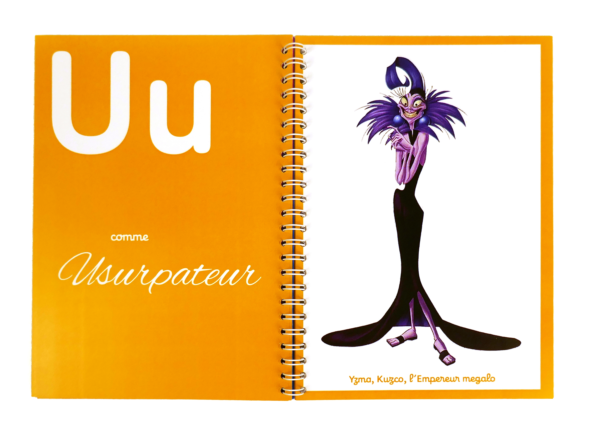
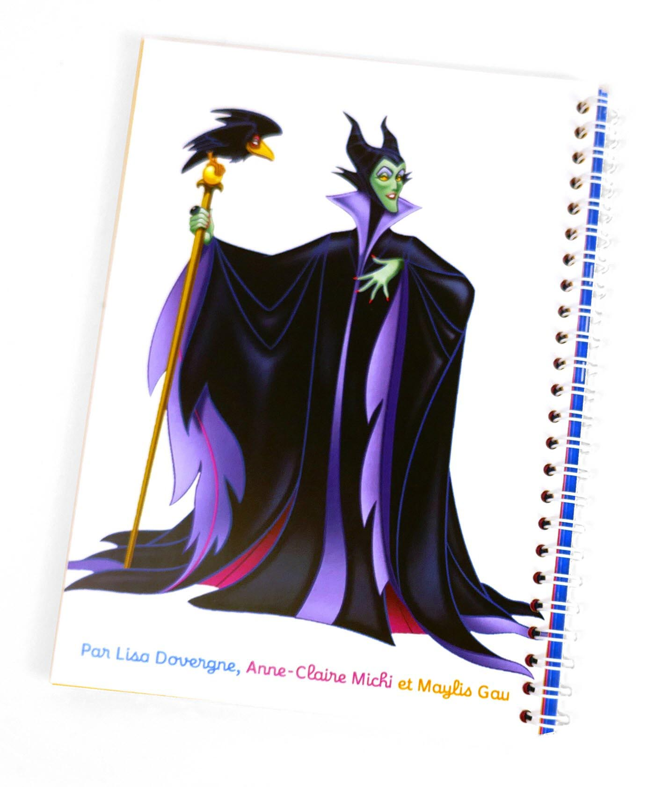
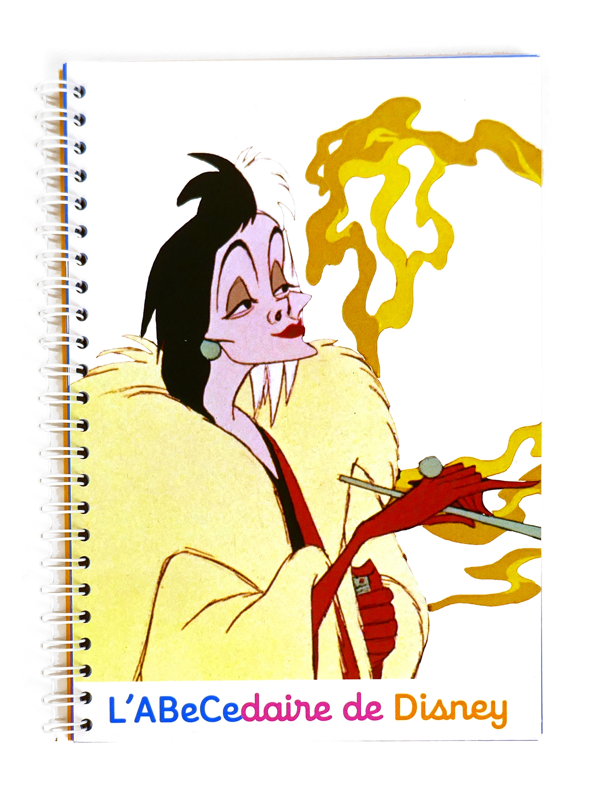
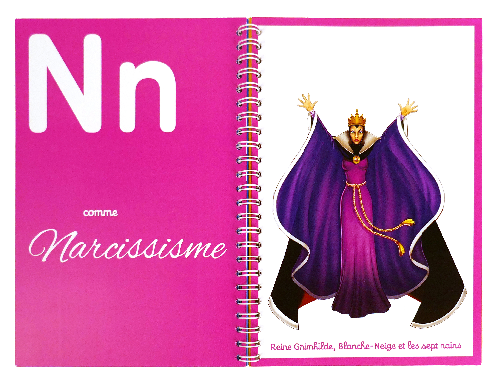
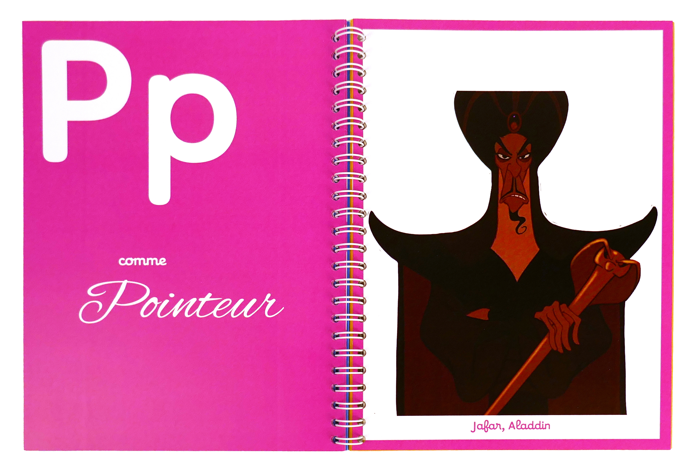
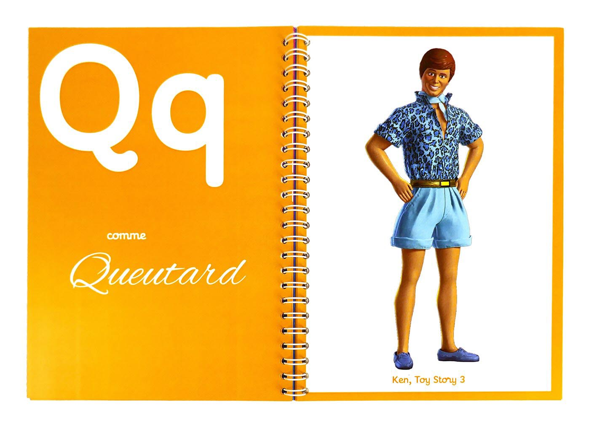
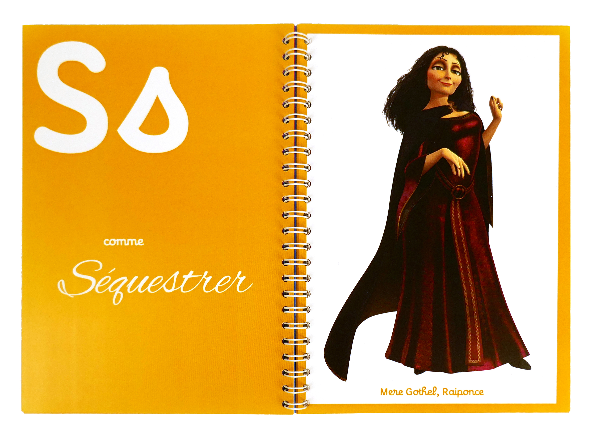
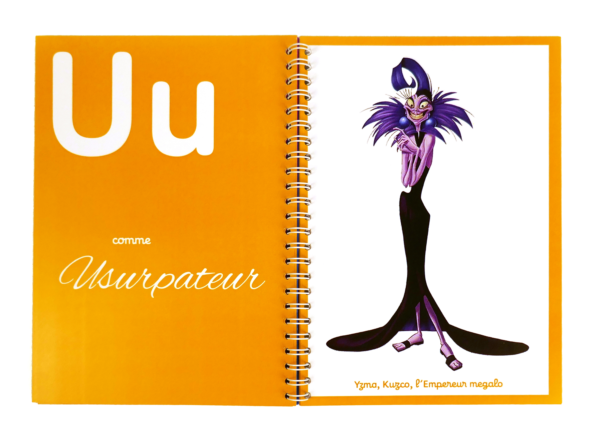
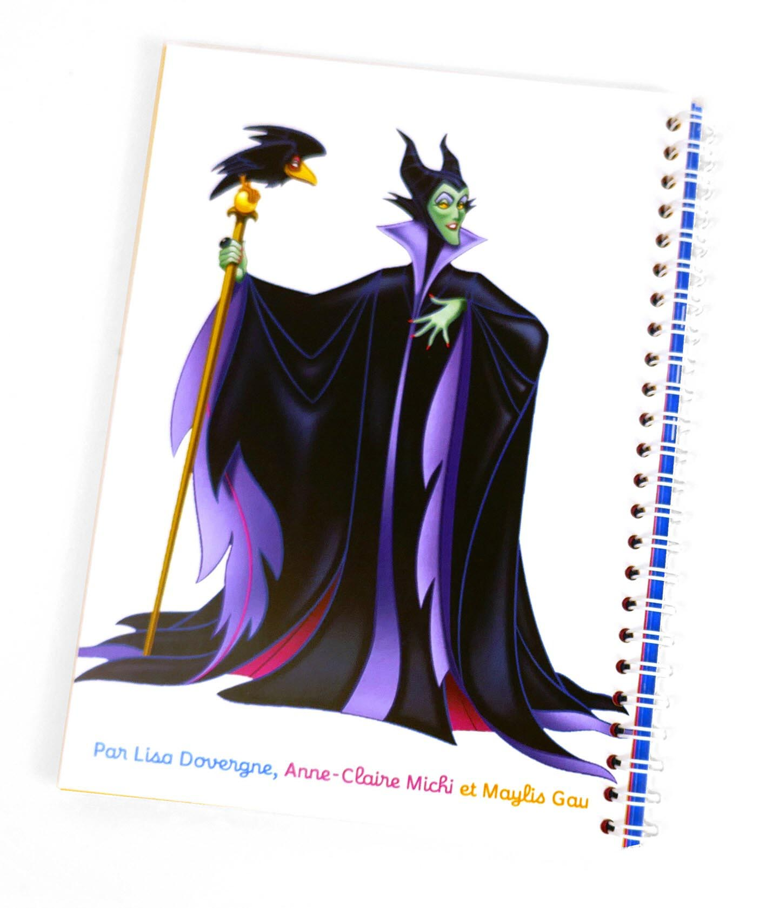
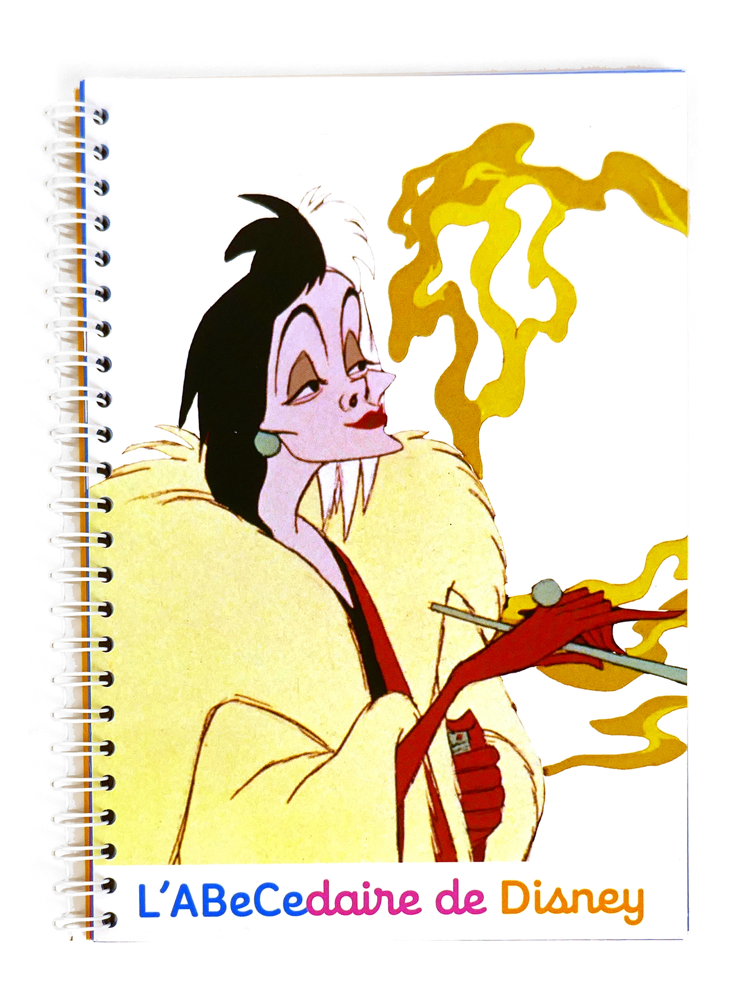